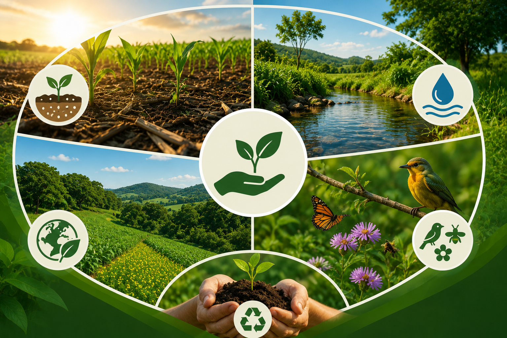

A agricultura sustentável é um modelo de produção agrícola que busca atender às necessidades da população atual sem comprometer os recursos naturais das futuras gerações.
Seu principal objetivo é produzir alimentos de forma eficiente, ao mesmo tempo em que preserva o meio ambiente, valoriza os trabalhadores rurais e contribui para o desenvolvimento econômico das comunidades.
Entre seus pontos fortes, destacam-se a conservação do solo e da água, a redução dos impactos ambientais, a preservação da biodiversidade e o incentivo ao uso responsável dos recursos naturais.
Além disso, esse modelo promove uma produção mais equilibrada e duradoura, garantindo maior segurança alimentar e qualidade de vida para a sociedade.
Na prática, a agricultura sustentável funciona por meio da adoção de técnicas que diminuem os danos ao meio ambiente, como a rotação de culturas, o plantio direto, o uso racional da água, a recuperação de áreas degradadas e a redução da utilização de produtos químicos.
Dessa forma, é possível aumentar a produtividade agrícola sem esgotar os recursos naturais, tornando a produção mais eficiente e sustentável a longo prazo.
